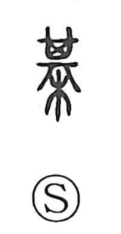

棋

Uncategorized
Kun: | On: ki
chess ・ board game ・ go ・ shogi
Explanation
A phono-semantic character, 棋 takes its sound from 其 (ki). The graph 其 originally represents a 箕, a square, dustpan-like implement, and by extension suggests something nearly square. Because the go and shogi boards are square, 其 was employed in characters used for these games, as in 碁 and 棋. In antiquity such games were known by names like 博棋, 六博, and 弈棋. A third-century work known as the Entertainment Classic describes a board seventeen lines by seventeen with one hundred fifty black and white pieces, essentially the game of go as we recognize it today. The game was transmitted to Japan with the Tang diplomatic missions.